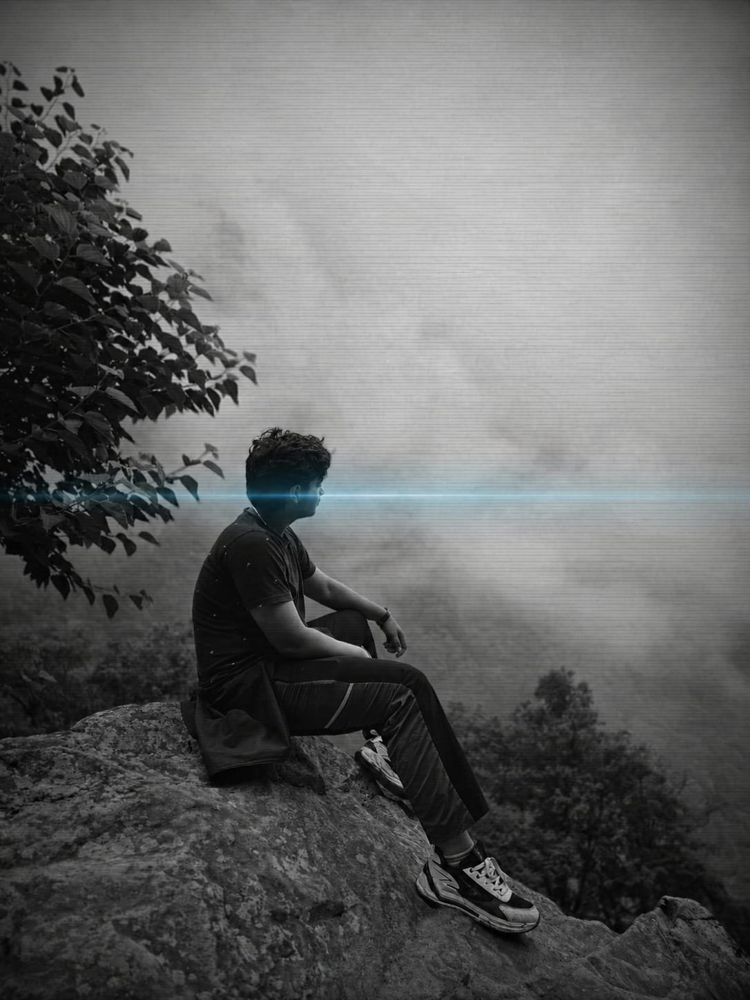
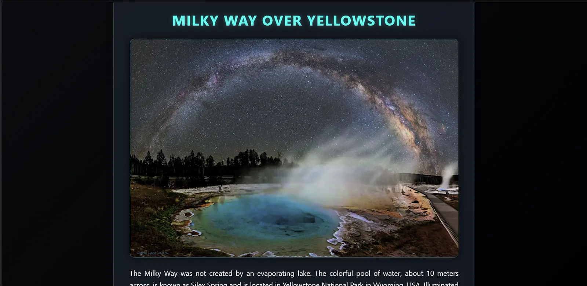

01
LANGUAGES
⌁PYTHON85
HTML / CSS85
JAVASCRIPT85
BASED IN
INDIA
Harshit Kataria / Developer / Designer
A symphony of algorithms and pixels,
crafted for the next dimension.

I have been coding for 1.5 years, building thoughtful digital experiences and turning ideas into clear, useful interfaces.
LET'S CONNECT ↗A constantly evolving stack.
Always learning. Never static.
// THE DETAILS MAKE
// THE DIFFERENCE
03 / 06
SELECTED WORKS

IMG_001 / 2024+PRODUCT / WEBGL
Where young and aspiring astrophotographers can take inspo and see the image of the day by NASA APOD.
 IMG_002 / 2023+
IMG_002 / 2023+ IMG_003 / 2023+
IMG_003 / 2023+EXPERIMENT / THREE.JS
Currently working on my next big thing.